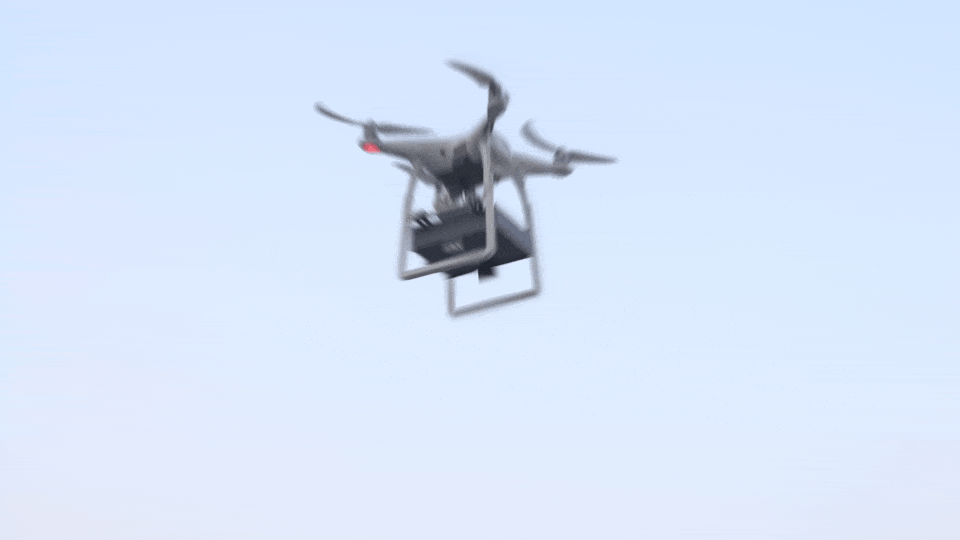
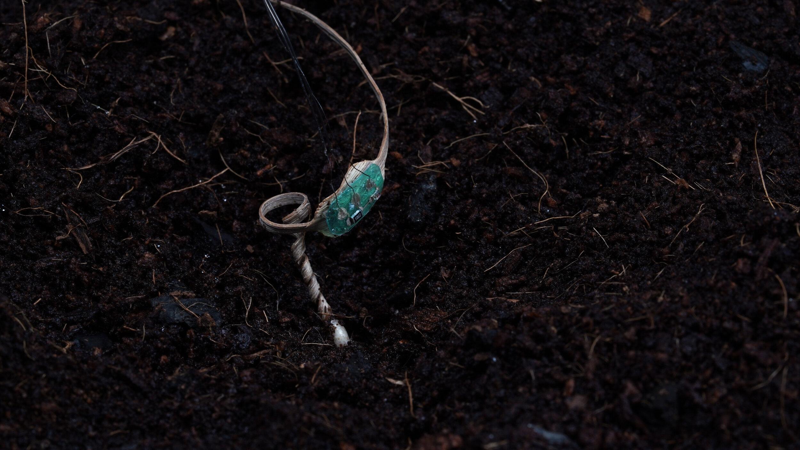
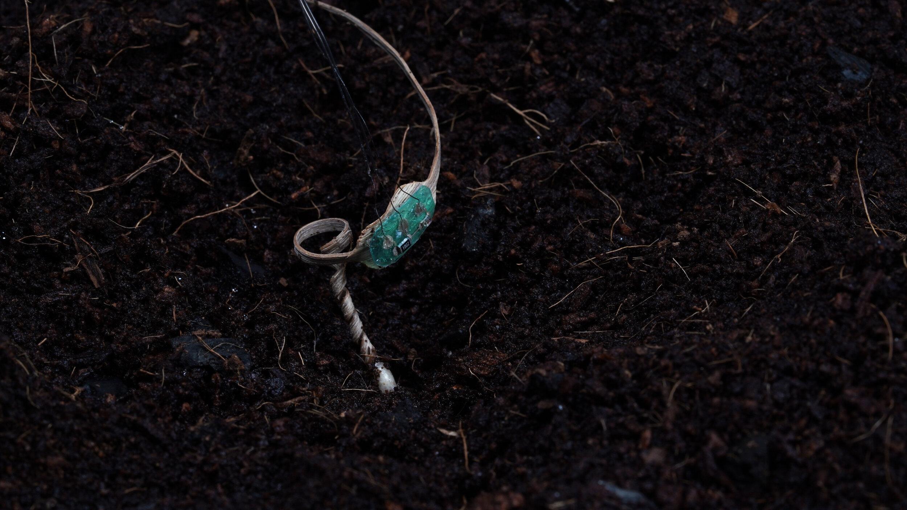

Aerial seeding is a crucial way to cover large and otherwise inaccessible areas, and can facilitate post-fire reforestation or wildland restoration. However, when a seed lies on the surface, it can be damaged by weather conditions or eaten by wildlife, resulting in low germination rates.
Inspired by erodium seed, which has evolved over million of years to absorb energy from its environment and drill itself into the ground for seeding purposes, E-seed is developed to tunnel through the ground. The seed carrier has a higher implantation success rate than that of Erodium seeds. This technology may improve the effectiveness of aerial seeding to address agricultural and environmental stresses in degraded regions.
E-seed not only represents our effort to reverse-engineer natural actuators, but also makes me ponder the relationship between human and nature, nature and materials science, materials science and design.
We do not just learn from nature. We are paying the knowledge forward to construct a synergetic environment.
We designed a wood-based biodegradable seed carrier that mimics seeds of Erodium, a genus of plants with seeds that unwind coiled tails to act as a drill to plant into the ground. The seed carrier has three coiled tails attached that unwind when moistened and can carry seeds as large as those of whitebark pine trees, which are about 11 mm long and weigh about 72 mg. Increasing the number of unwinding tails ensures the drill bit is better angled to the surface for burrowing. The seed carriers had an 80% success rate of getting seeds into the ground on flat land, reducing the risk of them blowing away or being eaten by animals. Under the same terrain conditions, the natural Erodium seed’s success rate was 0%. The carriers could also be used to deploy fertilizers or other materials (such as sensors) that could be beneficial for agricultural and conservation applications, the authors conclude.
 

The geometric-based designs allow us to tailor the self-burial seed carriers for different terrain conditions and payloads.

We conducted five outdoor drilling experiments with 136 three-tailed seed carriers in two geographical locations over two springs.
Bibtex
@article{luo2023autonomous,
title={Autonomous self-burying seed carriers for aerial seeding},
author={Luo, Danli and Maheshwari, Aditi and Danielescu, Andreea and Li, Jiaji and Yang, Yue and Tao, Ye and Sun, Lingyun and Patel, Dinesh K and Wang, Guanyun and Yang, Shu and others},
journal={Nature},
volume={614},
number={7948},
pages={463--470},
year={2023},
publisher={Nature Publishing Group UK London}
}
@inproceedings{luo2020seed,
title={E-seed: shape-changing interfaces that self drill},
author={Luo, Danli and Gu, Jianzhe and Qin, Fang and Wang, Guanyun and Yao, Lining},
booktitle={Proceedings of the 33rd Annual ACM Symposium on User Interface Software and Technology},
pages={45--57},
year={2020}
}